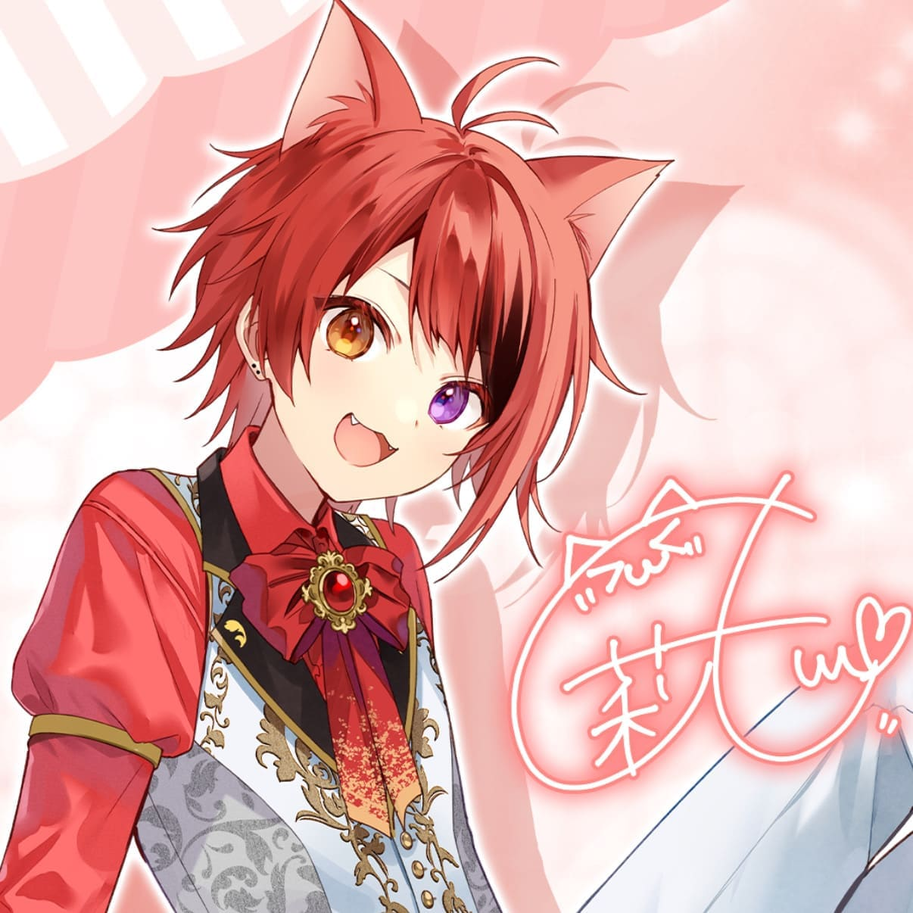

莉犬(Rinu)
メンバカラー ： 赤
主な活動 ： 歌・配信・ゲーム実況
紹介 ： 明るく親しみやすいキャラクターが魅力。
るぅと(Root)
メンバーカラー ： 黄色
主な活動 ： 歌・作詞・作曲
紹介 ： 透き通る歌声と音楽制作が魅力。
ころん(Colon)
メンバーカラー ： 水色
主な活動 ： 歌・ゲーム実況
紹介 ： 明るく元気なキャラクターが魅力。
さとみ(Satomi)
メンバーカラー ： ピンク
主な活動 ： 歌・ゲーム実況
紹介 ： 優しい歌声と落ち着いた雰囲気が魅力。
ななもり。(Nanamori)
メンバーカラー ： 紫
主な活動 ： 配信・企画・プロデュース
紹介 ： 企画・運営など陰ですとぷりを支える。
ジェル(Jel)
メンバーカラー ： オレンジ
主な活動 ： おもしろ動画制作・歌
紹介 ： 関西人＆おもしろトークが魅力。